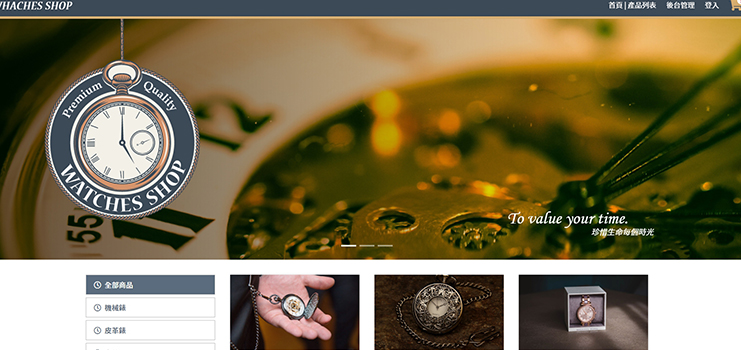
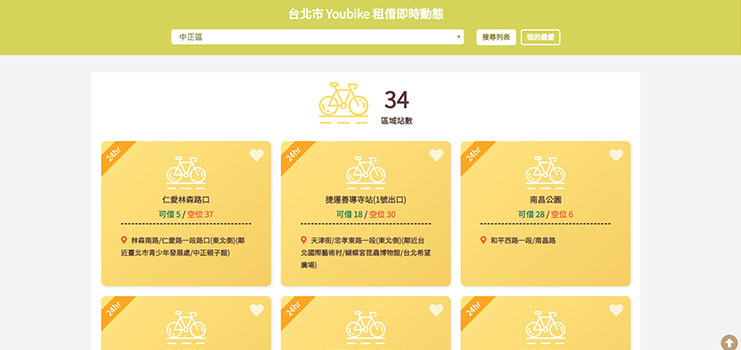
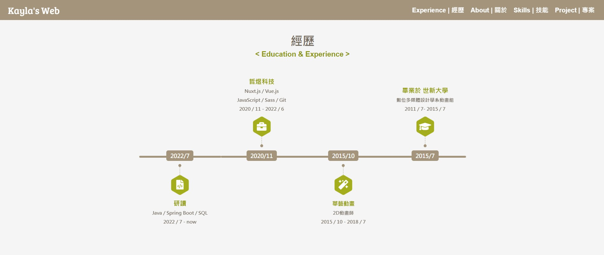

學經歷
< Education & Experience >
PS. 拉動視窗看看三種時間軸的變化吧~
關於我
< Personal & Resume >
| Language | 語言 |
|---|
| Interests | 興趣 |
|
書籍 
戲劇 音樂 桌遊 爬山 旅行 |
李盈璇 ( Lee Ying Hsuan )
2015畢業於世新大學數位多媒體設計學系動畫組， 畢業作品「少年伯格的煩惱」獲得放視大賞樂陞科技美術創意獎佳作， 畢業後進入「華藝動畫有限公司」擔任2D動畫兼特效， 主要執行專案類型包含廣告特效、兒童動畫等， 在此我執行過需獨當一面的案子， 從角色設計、分鏡設計、動態表演到後製剪接一人完成， 也參與過多人團隊廣告案， 期間培養了注重細節、刻劃細緻品質、團隊溝通的能力。 2018/7我決定轉職前端工程師， 程式碼給我們更大的力量， 超越視覺的直觀、提升生活裡的實用性， 前端是一個兼具程式邏輯和設計美感的職業， 而這正是我期待成為的更好的狀態。 待業期間我走過了前端的必備流程， 透過網路資源和書籍學習： HTML、CSS、SCSS、Bootstrap、 jQuery、JavaScript、 Vue.js、Git， 目前學會了各項技能的基礎， 也一直持續學習進階的原理和用法， 近期會先加強原生語言JavaScript，和補足資料結構、演算法知識， 下一步則會接觸 Node.js、python等後端語言， 期望能在解決問題和創意發揮的空間裡自在遊走， 成為獨當一面的前端工程師！ 喜歡試新、也在意穩定， 喜歡理性與感性並行， 喜歡剛柔並濟，喜歡可愛有趣， 喜歡酷炫與華麗，也喜歡簡潔與感動， 喜歡小說、戲劇、音樂、桌遊、健行、旅行， 希望生活裡的感受可以成就工作中的靈感！
Language
| 語言
Interests
| 興趣
書籍
戲劇
音樂
桌遊
爬山
旅行
李盈璇 (Lee Ying-Hsuan)
2015畢業於世新大學數位多媒體設計學系動畫組， 畢業作品「少年伯格的煩惱」獲得放視大賞樂陞科技美術創意獎佳作， 畢業後進入「華藝動畫有限公司」擔任2D動畫兼特效， 主要執行專案類型包含廣告特效、兒童動畫等， 在此我執行過需獨當一面的案子， 從角色設計、分鏡設計、動態表演到後製剪接一人完成， 也參與過多人團隊廣告案， 期間培養了注重細節、刻劃細緻品質、團隊溝通的能力。 2018/7我決定轉職前端工程師， 程式碼給我們更大的力量， 超越視覺的直觀、提升生活裡的實用性， 前端是一個兼具程式邏輯和設計美感的職業， 而這正是我期待成為的更好的狀態。 待業期間我走過了前端的必備流程， 透過網路資源和書籍學習： HTML、CSS、SCSS、Bootstrap、 jQuery、JavaScript、 Vue.js、Git， 目前學會了各項技能的基礎， 也一直持續學習進階的原理和用法， 近期會先加強原生語言JavaScript，和補足資料結構、演算法知識， 下一步則會接觸 Node.js、python等後端語言， 期望能在解決問題和創意發揮的空間裡自在遊走， 成為獨當一面的前端工程師！ 喜歡試新、也在意穩定， 喜歡理性與感性並行， 喜歡剛柔並濟，喜歡可愛有趣， 喜歡酷炫與華麗，也喜歡簡潔與感動， 喜歡小說、戲劇、音樂、桌遊、健行、旅行， 希望生活裡的感受可以成就工作中的靈感！
前端技能
< Front-end Skills & Software >
Vue.js
- 相關作品連結 :
WATCHES SHOP 手錶購物網 - 使用Vue.js 框架建構
- SPA 網頁應用
- 相關技術 : Vue Cli3、Vue-router、Vuex
JavaScript / JQuery
- 相關作品連結 :
台北市 Youbike 租借即時動態 BMI 計算機 - 了解 JavaScript 基本語法 以及 ES6 語法。
- AJAX / JSON 介接遠端 API
- jQuery 設計網頁動畫效果，了解如何使用第三方套件
- 持續研究 JavaScript 進階用法，如 : 閉包、Callback 函式、原型鏈等概念。
HTML5 / CSS3 / SCSS / Bootstrap
- 相關作品連結 : 野草披薩店
- 能不依賴 Framework 下進行 RWD 客製化，開發符合各裝置尺寸的網站建置。
- SCSS 基礎掌握 Variables、Nesting、Import、Mixins、Function，加快開發速度。
- CSS Flexbox / Grid / Animation / Transform / Transition
- Bootstrap 熟悉響應式網格系統、部分元件。
Git / Github
- Ying-Hsuan's Github 連結
- Git 基礎使用，了解分支跟衝突。
- GitHub Pages
Others
- 略懂演算法、資料結構概念，往後將持續研究。
- 設計軟體 : After Effects、Photoshop、Illustrator。
作品
< Profolio >

WATCHES SHOP 手錶購物網
前後端分離 - Vue.js + RESTful API 設計
後台管理系統
SPA架構、Vue-Cli3、Vue-router
SCSS、Bootstrap、RWD
Vue.js
JavaScript
Bootstrap
RWD
SCSS
HTML

台北市 Youbike 租借即時動態
串接台北市 Youbike Open Data API
串接 Google Map API，有地圖連結功能
LocalStorage 可儲存及刪除常用清單
RWD
AJAX
LocalStorage
Google Map API
JavaScript
RWD
CSS
HTML

Ying Hsuan's Web
三種裝置客製化排版 : 時間軸(學經歷部分)設計
微動畫設計
Plugin、SCSS、RWD
Layout
Animation
JavaScript
Plugin
RWD
SCSS
HTML